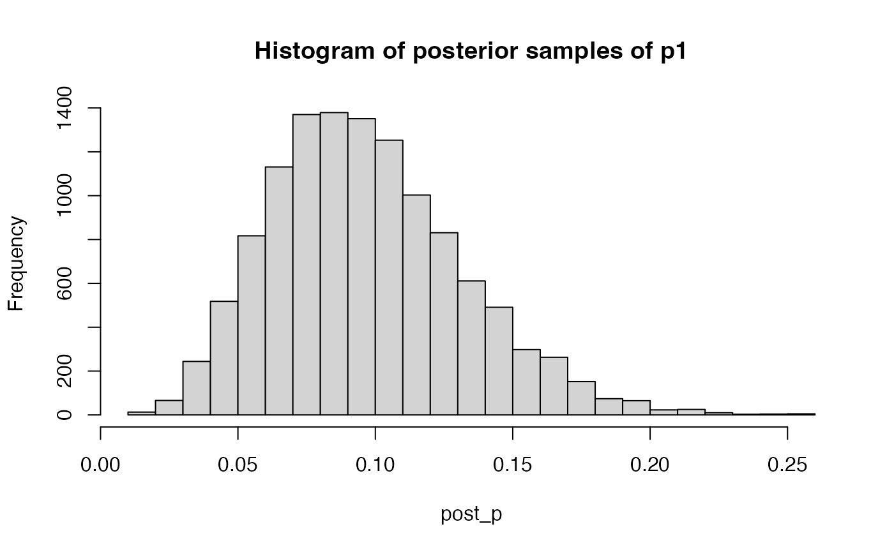
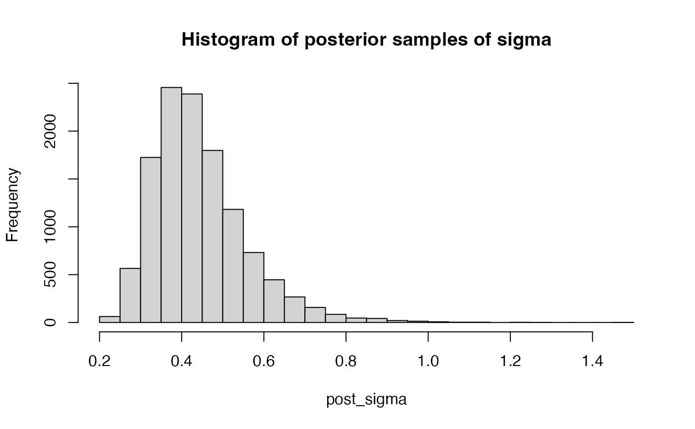
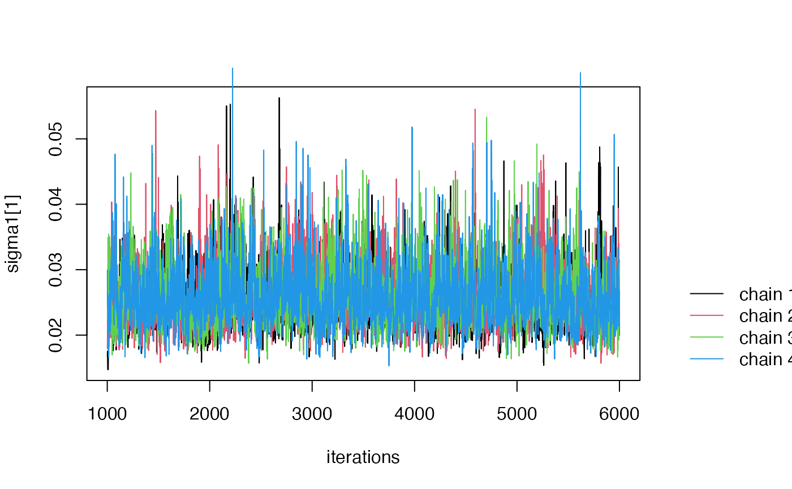

FLOW-MR-tutorial
FLOW-MR-tutorial.RmdIntroduction
FLOW-MR is an R package for performing Mendelian
Randomization under the mediation setting. This tutorial demonstrates
how to use the package step by step.
Installation
# Install devtools if not installed
install.packages("devtools")
#>
#> The downloaded binary packages are in
#> /var/folders/1p/kyg0zmtx4gdg27q_5x4d78fc0000gn/T//RtmpcEPzh6/downloaded_packages
# Install FLOW-MR
devtools::install_github("ZixuanWu1/FLOW-MR")
#> rlang (1.1.4 -> 1.1.5 ) [CRAN]
#> cli (3.6.3 -> 3.6.4 ) [CRAN]
#> pillar (1.9.0 -> 1.10.1 ) [CRAN]
#> R6 (2.5.1 -> 2.6.1 ) [CRAN]
#> Rcpp (1.0.13 -> 1.0.14 ) [CRAN]
#> withr (3.0.1 -> 3.0.2 ) [CRAN]
#> gtable (0.3.5 -> 0.3.6 ) [CRAN]
#> RcppArmad... (14.0.2-1 -> 14.2.3-1) [CRAN]
#>
#> The downloaded binary packages are in
#> /var/folders/1p/kyg0zmtx4gdg27q_5x4d78fc0000gn/T//RtmpcEPzh6/downloaded_packages
#> ── R CMD build ─────────────────────────────────────────────────────────────────
#> * checking for file ‘/private/var/folders/1p/kyg0zmtx4gdg27q_5x4d78fc0000gn/T/RtmpcEPzh6/remotesa4275d259a15/ZixuanWu1-FLOW-MR-8310e6b/DESCRIPTION’ ... OK
#> * preparing ‘FLOWMR’:
#> * checking DESCRIPTION meta-information ... OK
#> * cleaning src
#> Warning: bad markup (extra space?) at BayesMediation.Rd:48:21
#> Warning: bad markup (extra space?) at BayesMediation.Rd:49:22
#> Warning: bad markup (extra space?) at BayesMediation.Rd:50:26
#> Warning: bad markup (extra space?) at BayesMediation.Rd:52:27
#> Warning: bad markup (extra space?) at BayesMediation.Rd:54:29
#> Warning: bad markup (extra space?) at BayesMediation.Rd:56:30
#> Warning: bad markup (extra space?) at BayesMediation.Rd:58:17
#> Warning: bad markup (extra space?) at BayesMediation.Rd:59:18
#> Warning: bad markup (extra space?) at gibbs_wrapper.Rd:64:9
#> Warning: bad markup (extra space?) at gibbs_wrapper.Rd:65:9
#> Warning: bad markup (extra space?) at gibbs_wrapper.Rd:66:14
#> Warning: bad markup (extra space?) at gibbs_wrapper.Rd:67:14
#> Warning: bad markup (extra space?) at gibbs_wrapper.Rd:68:10
#> Warning: bad markup (extra space?) at gibbs_wrapper.Rd:69:13
#> Warning: bad markup (extra space?) at summary_gibbs.Rd:24:12
#> Warning: bad markup (extra space?) at summary_gibbs.Rd:25:16
#> Warning: bad markup (extra space?) at summary_gibbs.Rd:26:10
#> Warning: bad markup (extra space?) at summary_gibbs.Rd:27:13
#> Warning: bad markup (extra space?) at summary_gibbs.Rd:28:12
#> Warning: bad markup (extra space?) at summary_gibbs.Rd:29:14
#> Warning: bad markup (extra space?) at summary_gibbs.Rd:30:11
#> Warning: bad markup (extra space?) at summary_gibbs.Rd:31:13
#> Warning: bad markup (extra space?) at zero.centered.em.Rd:42:10
#> Warning: bad markup (extra space?) at zero.centered.em.Rd:43:10
#> Warning: bad markup (extra space?) at zero.centered.em.Rd:44:10
#> * installing the package to process help pages
#> * saving partial Rd database
#> * cleaning src
#> * checking for LF line-endings in source and make files and shell scripts
#> * checking for empty or unneeded directories
#> * building ‘FLOWMR_1.0.tar.gz’Load the Package
library(FLOWMR)Example Usage
Step 1: Prepare Input Data
Here, we use GRAPPLE to preprocess the input data. We
can download the GRAPPLE package using the following
command:
devtools::install_github("jingshuw/grapple")Next, we use GRAPPLE to preprocess the data following a
three-sample Mendelian Randomization (MR) design. The sel.file is used
to select genome-wide significant SNPs, the exp.file contains the
exposures of interest, and the out.file contains the outcomes of
interest. For more details, visit GRAPPLE on GitHub.
In this example we use adult BMI from GIANT and childhoood BMI from EGG as selections files. We use childhood body BMI from MOBA, adult BMI from UK biobank as exposures, and Breast Cancer from this paper as outcome. One can download the traits from this link.
library(GRAPPLE)
# Selection file of snps
sel.file <- c("BMI-giant17eu.csv", "BMIchild-egg15.csv" )
# Exposure file
exp.file <- c( "BMI8year_moba19","BMIadult-ukb.csv" )
# Outcome file
out.file <- "Breast-Micha17erp.csv"
# Use plink to select independent significant SNPs
plink_refdat <- "data_maf0.01_rs_ref/data_maf0.01_rs_ref"
## Use max.p.thres to decide the significance level of SNPs
## Use cal.cor = T to compute the noise correlation
data.list <- GRAPPLE::getInput(sel.file, exp.file, out.file, plink_refdat, max.p.thres =1e-3,
plink_exe = "plink_mac_20210606/plink", cal.cor = T)
#> [1] "Marker candidates will not be obtained as number of risk factors k > 1"
#> [1] "loading data for selection: BMI-giant17eu.csv ..."
#> [1] "loading data for selection: BMIchild-egg15.csv ..."
#> [1] "loading data from exposure: BMI8year_moba19 ..."
#> [1] "loading data from exposure: BMIadult-ukb.csv ..."
#> [1] "loading data from outcome: Breast-Micha17erp.csv ..."
#> [1] "Start clumping using PLINK ..."
#> [1] "487 independent genetic instruments extracted. Done!"Step 2: Run FLOW-MR
To run FLOW-MR, we need to prepare two input files,
Gamma_hat and Sd_hat. Also ensuring that the
time order is reversed. Then the function BayesMediation
will execute the Gibbs sampler.
Here, you can optionally provide cor_mat, a K by K
matrix which represents the shared noise correlation between GWAS
summary statistics across traits. This is particularly useful when the
GWAS summary statistics include overlapping samples.
GRAPPLE estimates the noise correlation by first selecting
non-significant SNPs (e.g., p-value > 0.5) and then computing the
correlation between the estimated effect sizes. The default value is a
diagonal matrix.
dat <-data.list$data;
# Run the mediation method
Gamma_hat =rbind(dat$gamma_out1,
dat$gamma_exp2,
dat$gamma_exp1)
Sd_hat = rbind(dat$se_out1,
dat$se_exp2,
dat$se_exp1)
cor_mat = data.list$cor.mat[3:1, 3:1]
result = BayesMediation(Gamma_hat, Sd_hat, cor = cor_mat, inv = TRUE)
#> [1] "2025-03-14 17:51:17 CDT"
#> [1] "2025-03-14 17:53:00 CDT"Step 3: Look at summary of direct effects
In this step, we print the summary of direct effects, where each row corresponds to a parameter.
print(result$summary)
#> mean var sd 2.5% 50%
#> B[1,2] 0.154338457 1.701102e-02 0.1304263188 -0.086087835 0.14881437
#> B[1,3] -0.404274992 2.928917e-02 0.1711407781 -0.769336088 -0.39693116
#> B[2,3] 0.708872390 1.017322e-02 0.1008623577 0.540054384 0.69767799
#> sigma 0.431804552 1.259795e-02 0.1122405760 0.273221671 0.41221633
#> sigma1[1] 0.025784198 1.999004e-05 0.0044710217 0.018924747 0.02514419
#> sigma1[2] 0.025985400 6.572242e-05 0.0081069366 0.015846379 0.02422156
#> sigma1[3] 0.047919378 1.043851e-04 0.0102169049 0.032046730 0.04657167
#> sigma0[1] 0.004181953 7.137785e-07 0.0008448541 0.002756738 0.00411279
#> sigma0[2] 0.008421607 7.256956e-07 0.0008518777 0.006686699 0.00846911
#> sigma0[3] 0.011072690 1.571560e-06 0.0012536189 0.008650895 0.01104732
#> p[1] 0.098527271 1.313597e-03 0.0362435839 0.040041969 0.09461229
#> p[2] 0.021864833 2.790611e-04 0.0167051229 0.002539565 0.01770998
#> p[3] 0.042887034 2.604631e-04 0.0161388684 0.017589026 0.04098024
#> 97.5% ESS Rhat
#> B[1,2] 0.430083146 406.87558 1.005156
#> B[1,3] -0.098941245 332.50236 1.007283
#> B[2,3] 0.916522397 52.86458 1.019953
#> sigma 0.713316725 4166.44315 1.001421
#> sigma1[1] 0.036234355 1347.63199 1.001091
#> sigma1[2] 0.046489730 3445.32948 1.001156
#> sigma1[3] 0.071524509 969.57039 1.003497
#> sigma0[1] 0.006013198 179.94048 1.010580
#> sigma0[2] 0.009987379 317.68482 1.005758
#> sigma0[3] 0.013586208 338.57316 1.005761
#> p[1] 0.179090509 647.77104 1.002486
#> p[2] 0.064461483 822.56019 1.002188
#> p[3] 0.080138057 1634.96614 1.000759In this summary, we provide the estimated posterior mean, variance, standard deviation, 2.5% quantile, median, 97.5% quantile, effective sample size (ESS), and Gelman-Rubin Rhat statistic for each parameter. The ESS quantifies the number of independent samples, while Rhat (the Gelman-Rubin statistic) assesses convergence. See ESS and Rhat for a detailed explanations of ESS and Rhat.
For the meaning of each parameter, B[l, k] represents
the direct effect of the
-th
latest trait on the
-th
latest trait. For example: B[1, 2] represents the direct
effect of adult BMI on breast cancer; B[1, 3] represents
the direct direct effect of childhood BMI on breast cancer;
B[2, 3] represents the direct direct effect of childhood
BMI on adult BMI.
See the figure below for a visualization.
knitr::include_graphics("https://zixuanwu1.github.io/FLOW-MR/articles/FLOW-MR-tutorial_files/figure-html/EffectVisual.png")
For the meaning of other parameters, we assume the following priors in our manuscript:
We also include the posterior summary of these parameters. In the
summary, sigma1[k] represents the standard deviation of the
slab component for trait
,
sigma0[k] represents the standard deviation of the spike
component for trait
,
p[k] represents the proportion of the slab component, and
sigma represents the standard deviation of
.
The effects should be considered as significant if its credible
interval does not include 0. For example, here B[2, 3] and
B[1, 3] are found to be significant, while
B[1,2] is not.
Step 4 (Optional) Working with Raw outputs
In most cases, the summary table provides sufficient information. However, in certain situations, it may be useful to directly access the posterior samples, such as when you need to obtain other quantiles. In these cases, you can follow the procedure outlined below.
In the Gibbs sampler, we ran four chains in parallel. To access
information from the i-th chain, you can use the command
result$raw[[i]]. For example result$raw[[1]]$B
is a three dimensional array of dimension K by K by N, where K is the
number of traits and N is the number of iterations. Similarly,
result$raw[[1]]$sigma1,
result$raw[[1]]$sigma0, result$raw[[1]]$p are
two dimensional arrays of dimension K by N where K is the number of
traits and N is the number of iterations.
To simplify the procedure, one can use the function
get_posterior_samples in FLOWMR to extract
posterior samples from all four chains for a particular parameter after
a user-defined warm-up period. The parameter must be one of “B”,
“sigma1”, “sigma0”, “sigma”, “p”.
For example, here we extract the posterior samples for
B[1,3] after 3000 warm-up periods
post_B = get_posterior_samples(result$raw, par = "B", K = 3, ind = c(1,3), warmup = 3000)We can check its quantiles:
And we can also draw a histogram of it for visualization:
hist(post_B, breaks = 30, main = "Histogram of posterior samples of direct effects of X3 on X1")For sigma1, sgima0 and p, the
index argument have to be 1 dimensional. For example
post_p = get_posterior_samples(result$raw, par = "p", K = 3, ind = 1, warmup = 3000)
hist(post_p, main = "Histogram of posterior samples of p1")
For sigma, the index argument should be NULL:
post_sigma = get_posterior_samples(result$raw, par = "sigma", K = 3, ind = NULL, warmup = 3000)
hist(post_sigma, main = "Histogram of posterior samples of sigma")
Step 5 (Optional) MCMC diagnoistics.
If non-convergence issues arise (e.g., an Rhat value greater than
1.1), you can generate a trace plot of the posterior samples using the
function traceplot:


The traceplot is a useful tool for diagnosing MCMC convergence (See this in rstan for example link. In the traceplot, each line corresponds to posterior samples from one MCMC chain. Non-convergence is indicated when the posterior samples from the four chains do not appear similar.
If convergence issues arise, consider increasing the number of iterations or adjusting the prior parameters
Step 6 Estimating path-wise / indirect effects
To estimate path-wise effects, use the following command. For
example, the function indirect_effect evaluates the
indirect effect of childhood BMI on breast cancer through adult BMI:
path_effect = indirect_effect(result$raw, K = 3, path = c(3,2,1), warmup = 3000)
print(path_effect)
#> Mean 2.5% 50% 97.5%
#> 1 0.1145172 -0.05706925 0.102001 0.3561111The path parameter specifies the path you are interested
it. In this case it is 3 -> 2 -> 1.
This can also be done by first extracting the posterior samples of `B[1, 2]’ and ‘B[2, 3]’, then multiply them together
post_B1 = get_posterior_samples(result$raw, par = "B", K = 3, ind = c(1,2), warmup = 3000)
post_B2 = get_posterior_samples(result$raw, par = "B", K = 3, ind = c(2,3), warmup = 3000)
print(quantile(post_B1 * post_B2, c(0.025, .5, .975)))
#> 2.5% 50% 97.5%
#> -0.05706925 0.10200105 0.35611112Alternatively, instead of focusing on a specific path, you can
estimate the sum of effects from all non-direct paths. The function
indirect_effect summarizes the posterior samples of all
non-direct path-wise effects. It outputs array df of
dimension K by K by 4, where the first two dimensions correspond to the
dimensions of B, the third dimension contains the mean,
2.5/% quantile, median, 97.5% quantile respectively.
ind_effect = indirect_effect(result$raw, K = 3, path = "all", warmup = 3000)
print(ind_effect)
#> , , Mean
#>
#> [,1] [,2] [,3]
#> [1,] 0 0 0.1145172
#> [2,] 0 0 0.0000000
#> [3,] 0 0 0.0000000
#>
#> , , Quantile_0.025
#>
#> [,1] [,2] [,3]
#> [1,] 0 0 -0.05706925
#> [2,] 0 0 0.00000000
#> [3,] 0 0 0.00000000
#>
#> , , Quantile_0.5
#>
#> [,1] [,2] [,3]
#> [1,] 0 0 0.102001
#> [2,] 0 0 0.000000
#> [3,] 0 0 0.000000
#>
#> , , Quantile_0.975
#>
#> [,1] [,2] [,3]
#> [1,] 0 0 0.3561111
#> [2,] 0 0 0.0000000
#> [3,] 0 0 0.0000000We can also examine the posterior inference for the total effects, which represent the sum of the direct and indirect effects.
tot_effect = total_effect(result$raw, K = 3, warmup = 3000)
print(tot_effect)
#> , , Mean
#>
#> [,1] [,2] [,3]
#> [1,] 0 0.1543385 -0.2897578
#> [2,] 0 0.0000000 0.7088724
#> [3,] 0 0.0000000 0.0000000
#>
#> , , Quantile_0.025
#>
#> [,1] [,2] [,3]
#> [1,] 0 -0.08608784 -0.4663309
#> [2,] 0 0.00000000 0.5400544
#> [3,] 0 0.00000000 0.0000000
#>
#> , , Quantile_0.5
#>
#> [,1] [,2] [,3]
#> [1,] 0 0.1488144 -0.286424
#> [2,] 0 0.0000000 0.697678
#> [3,] 0 0.0000000 0.000000
#>
#> , , Quantile_0.975
#>
#> [,1] [,2] [,3]
#> [1,] 0 0.4300831 -0.1288943
#> [2,] 0 0.0000000 0.9165224
#> [3,] 0 0.0000000 0.0000000Finally, we demonstrate how to extract posterior samples of total, indirect, and path-wise effects, similar to how we did for the direct effects.
For each total effect, we use the function
get_total_samples.
tot_samples = get_total_samples(result$raw, 3, ind = c(1,3))
hist(tot_samples, main = "Histogram of posterior samples of total effects of X3 on X1")For path-wise effect, we use the function
get_indirect_samples.
path_samples = get_indirect_samples(result$raw, 3, path = c(3,2,1))
hist(path_samples, main = "Histogram of posterior samples of the effect of X3 on X1 through X2")For the joint effect of non-direct paths, we still use the function
get_indirect_samples. In this case we need to set
path to be “all” and specify the index of interests. In
this case, since there is only 1 indirect path, the indirect effect will
be identical to the path-wise effect we just examined
ind_samples = get_indirect_samples(result$raw, 3, path = "all", ind = c(1,3))
hist(ind_samples, , main = "Histogram of posterior samples of indirect effects of X3 on X1")